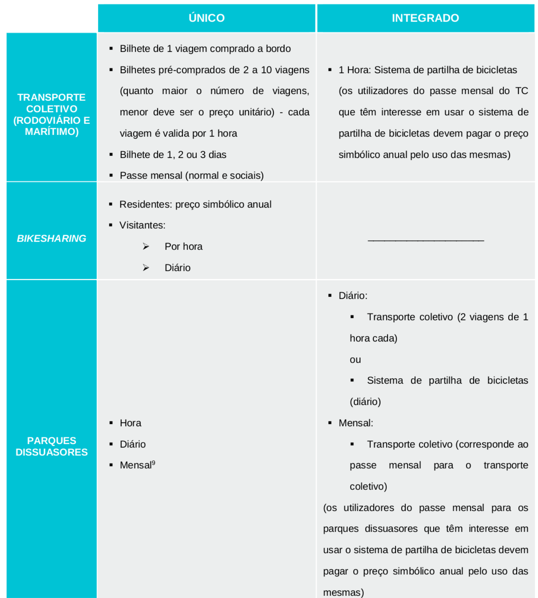

Implementar um sistema de bilhética integrada e estabelecer novas modalidades de tarifação.
Nos últimos anos, o setor dos transportes tem vindo a ser alvo de fortes apostas no desenvolvimento tecnológico, sendo que uma das áreas de maior inovação foi ao nível dos sistemas de cobrança de portagens e dos sistemas de bilhética integrada multimodal.
De facto, uma das formas mais efetivas de se promover a intermodalidade é através da implementação de uma bilhética integrada. Sendo a bilhética e a integração tarifária um aspeto fundamental para a atratividade de um sistema de transportes coletivo de passageiros, existem, neste domínio, exemplos de boas práticas em Portugal. Cita-se como exemplo, o caso do sistema Andante, na região do Porto.
A integração bilhética permite aos utentes realizarem as suas viagens, de forma multimodal, com o mesmo título de transporte, independentemente do operador e/ou número de transbordos efetuados, recorrendo aos operadores de transportes, públicos ou privados, que ofereçam um serviço mais adequado às suas necessidades, nomeadamente em termos de horários, frequência e tempo de viagem.
Os principais objetivos e ganhos perspetivados são:
- Racionalização do sistema de transporte;
- Diminuição do uso de suportes de papel;
- Diminuição dos custos operacionais dos diferentes operadores de transportes que operam em Faro, integrando, sempre que possível, os respetivos sistemas financeiro, administrativo e operacional;
- Repartição das receitas interoperador, através de um sistema claro e transparente;
- Minimização do tempo de viagem e desconforto dos transbordos;
- Menores custos para os utilizadores.
Como tal, propõe-se para o concelho de Faro uma bilhética integrada que seja flexível, escalável e adaptável aos diferentes operadores de transportes, englobando:
- Transporte coletivo;
- Bicicleta de uso público;
- Parques de estacionamento de longa duração (propostos no capítulo referente ao estacionamento).
Numa primeira análise identificaram-se quais os bilhetes simples que deveriam ser integrados com outros modos de transporte. Considera-se que o transporte coletivo rodoviário e marítimo devem ser integrados, ou seja, os bilhetes do transporte coletivo poderiam ser usados tanto no serviço realizado por autocarros como por barcos.
A tabela seguinte apresenta, de forma esquemática e resumida, quais as bilhéticas compatíveis de serem integradas com outros modos (excluindo os passes mensais). Em termos de cadeia de deslocação a tabela deve ser lida na sequência coluna-linha. Por exemplo, o bilhete simples do transporte coletivo é compatível de ser integrado com o sistema de partilha de bicicletas (quem comprar um bilhete para o transporte coletivo tem acesso ao sistema bikesharing). Já o bilhete simples do bikesharing não é compatível de ser integrado com o transporte coletivo (quem comprar um bilhete para o sistema bikesharing não tem acesso ao sistema de transporte coletivo).
Sempre que forem compatíveis, é suposto que com o bilhete simples do primeiro modo de transporte, acrescido de um determinado valor, seja possível o uso do segundo modo, sendo que o preço desse bilhete deve ser sempre inferior à soma dos dois bilhetes simples.
| 1º Modo/2º Modo | Transporte Coletivo (Rodoviário e Marítimo) | Bike Sharing | Parques Dissuasores |
|---|---|---|---|
| Transporte Coletivo (Rodoviário e Marítimo) | Compatível | Não compatível | |
| Bike Sharing | Não Compatível | Não compatível | |
| Parques Dissuasores | Compatível | Compatível |
Tabela 7 | Compatibilidades de integração entre bilhetes simples. Fonte: mpt®, 2016.
Tal como se pode observar, o primeiro modo na cadeia de deslocação com maior número de possibilidades de integração de bilhética são os parques de longa duração situados nas entradas da cidade (parques dissuasores 8 ), pois o objetivo deste Plano é exatamente potenciar uma transferência modal dos veículos individuais motorizados para os modos sustentáveis. Por outro lado, é o modo com o qual os outros modos de transporte têm menos possibilidades de integração, de forma a se promover que um utilizador de um determinado modo sustentável continue a sua cadeia de deslocação através de outro modo sustentável.
Depois desta primeira análise, identificaram-se quais as possibilidades de passes mensais integrados. Tal como para os bilhetes simples, os passes mensais do transporte coletivo rodoviário e marítimo também devem ser integrados.
Para os residentes interessados na utilização do sistema de partilha de bicicletas propõe-se um pagamento anual simbólico. Portanto, além da integração entre o transporte coletivo marítimo e rodoviário, apenas faz sentido serem integrados num passe mensal os parques dissuasores e o transporte coletivo. Propõe-se que com o passe do transporte público seja possível estacionar gratuitamente nos parques dissuasores.
Propõe-se ainda o estabelecimento de novas modalidades de tarifação, devidamente adaptadas às diferentes necessidades dos diferentes grupos, especialmente dos turistas e pessoas que se deslocam à cidade em negócios, através de passes pré-comprados para um, dois ou três dias. Pensa-se que deve igualmente haver integração horária para o transporte coletivo: um bilhete é válido durante 1 hora em todo o sistema, independentemente do número de transbordos realizados e do tipo de transporte utilizado (autocarro ou barco).
Ou seja, haverão duas modalidades de bilhética: única (direcionada para um só modo de transporte) e integrada. A tabela seguinte apresenta as diversas opções para as duas modalidades.

Tabela 8 | Tipo de bilhete para o Sistema de Mobilidade do Município de Faro. Fonte: mpt®, 2016.
Salienta-se que existe ainda a possibilidade de haver uma integração do sistema de mobilidade do município com o transporte coletivo ferroviário. Embora fosse fundamental proceder a esta integração, como esta parceria não depende exclusivamente do município, não será avaliada neste trabalho.